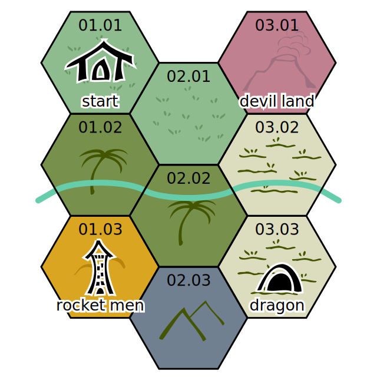
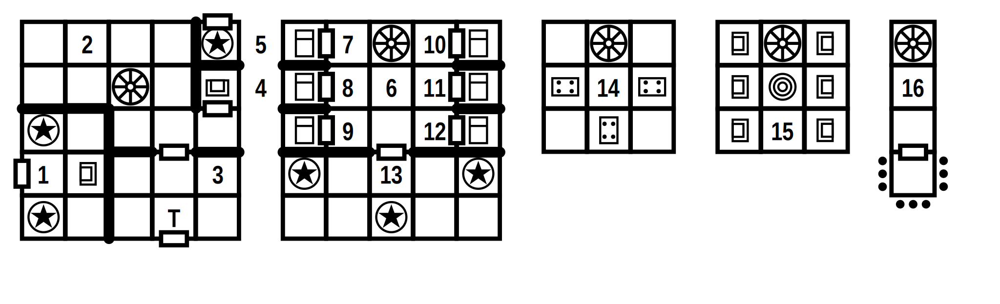

Ugh Nugh and the bleeping invasion
Gather your stoner friends, pick up those spears and travel through the subterranean dinosaur refuge to find the source of the flying drones that keep pestering your tribe. Infiltrate the lair of the rocket men and wrest the eye of eyes from their cold gauntlets and return your land to peace and quiet.

The drones have been spying on your every move, watching your most intimate moments, with incessant humming and beeping and blinking. You’ve smashed a few but enough is enough. They come from accross the river and that needs to stop.
Wilderness

01.01. Your village is safe.
01.02. The jungle is dense. 3 velociraptor hunting (HD 2 AC 7 1d6/1d4/1d4 bite + claws MV 18 SV 18).
01.03. Up in these hills stands the fortress of the rocket men (see below).
02.01. Your favourite hunting grounds. One open pit trap with a giant armadillo (HD 5 AC 5 1d6/1d4/1d4 bite + claws MV 6 SV 15).
02.02. The jungle turns into swamp. 3 hadrosaurs grazing (HD 4 AC 7 1d6/1d6 feet MV 15 SV 16).
02.03. Dark mountains rise from the jungle. A pteranodon flies overhead looking for halflings (HD 3 AC 8 1d4 beak MV 24 SV 17).
03.01. An active volcano. Poisonous vapours (save vs. poison every turn or faint for a turn; die if you fainted three times in a day). Captain Flateem is here, in her suit, taking tectonic measurements (HD 3 AC 2 1d6 zap gun MV 12 SV 16).
03.02. The flood plain is infested with crocodiles. You’ll meet one soon enough (HD 3 AC 4 1d6 bite + hold MV 12 SV 17; a crocodile doesn’t ever let go of living prey and just keeps dealing damage).
03.03. On a compost heap 10m high is the lair of a dragonodon (HD 10 AC 3 2d6/1d4/1d4 bite + claws MV 12 SV 17; alternative 2/day: 6d6 fire cone, save vs. breath for half).
Fortress of the rocket men

1. Throne room. Two guardian angels (HD 5 AC 4 1d10 blade MV 6 SV 10). If approached openly, Abel is here, in his suit (HD 3 AC 2 1d6 zap gun MV 12 fly SV 16).
2. Storage space with dinosaur bones, gardening tools, a small excavator, a large drill, a solar panel and device charger and a lot of pictures of your tribe.
3. The backentrance leads into a trapped room. Without a powered suit of the rocket men, the alarm sounds and 3 auto zap guns shoot at anything that moves (save vs. wands to avoid 1d6 damage).
4. Empty control seat. If approached discreetly and discovered, Abel is here, in his suit (HD 3 AC 2 1d6 zap gun MV 12 fly SV 16), controlling the guardian angel of room 5.
5. This guardian angel can be sent out on find and rescue missions, or to check any approaching outsiders (HD 5 AC 4 1d10 blade or 1d6 zap gun MV 6 fly SV 10).
6. Common room. If the alarm sounds, Chrysethum and Drogon are here, in their suit (HD 3 AC 2 1d6 zap gun MV 12 SV 16).
7. Abel’s bedroom.
8. Berta’s bedroom.
9. Chrysethum’s bedroom. If the alarm did not sound, they’re here, sleeping, out of their suit (HD 3 AC 9 1d6 zap gun MV 12 SV 17).
10. Drogon’s bedroom. If the alarm did not sound, he’s here, reading, out of his suit (HD 3 AC 9 1d6 zap gun MV 12 SV 17).
11. Eelam’s bedroom. Half-eaten leftovers on the bed. It a stinking mess. His empty suit is here.
12. Flateem’s bedroom.
13. Combat training room with wooden melee weapons. Three guardian angels in training mode (HD 5 AC 4 save vs. paralysis or faint for a turn MV 3 SV 10).
14. Canteen. Berta is here, in her suit, getting ready for her shift outside, drinking some water (HD 3 AC 9 1d6 zap gun MV 12 SV 17).
15. Control room with six monitor and the eye of eyes that controls the drones. Elam is here, not in his suit, looking busy (HD 3 AC 9 1d6 zap gun MV 12 SV 17).
16. Sense array with antennas going in every direction. A locked door leads to a platform outside. A suit is required to open the door.